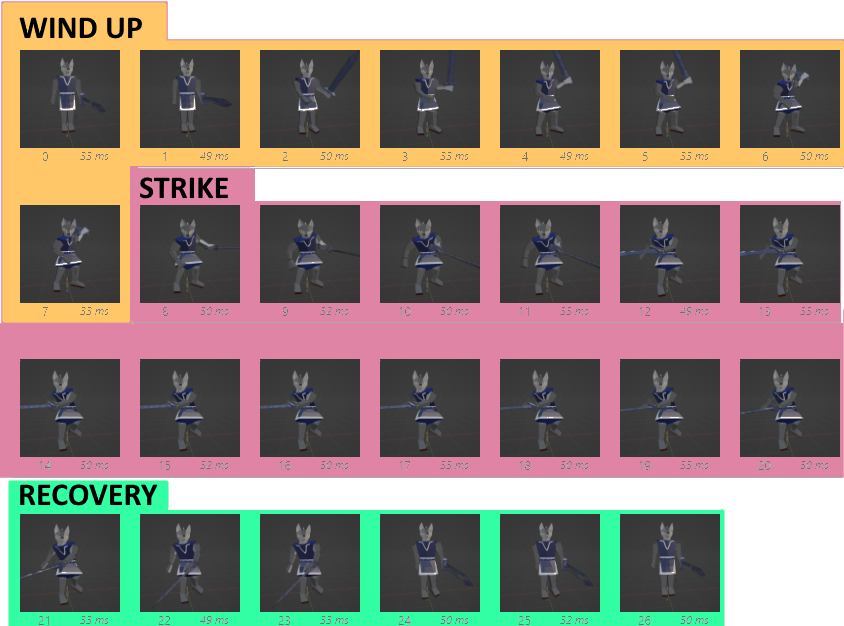

Project Hopping
Hi all,
I've been project hopping.
This month I worked on Micah, the mouse game I posted videos for earlier this year.
Micah is an exploration game about finding and using different transformative effects, inspired by Yume Nikki.
Here's some out-of-context screenshots.
I've ported the project from Love2D to Godot so that I can build it out faster.
Orbital Terminus is very close to finished.
Thank you for reading, and see you next month.
- Ciaran
Orbital Terminus
Hi all,
Silver Key progress has been slow, I've been designing and modeling environments. I hope to have more to show for that later.
In the meantime, I've been making a small space shooter.
You can see my progress here:
Here's some out-of-context screenshots.
The final game will have four stages, two of which are complete.
Thank you for reading and thank you for your patience. I'll see you at the end of September.
- Ciaran
Silver Key Phase II Release
Hi all,
Phase II of Silver Key is out! You can download it at the bottom of this page.
You can read a list of changes here: snorv.itch.io/silver-key/devlog/770387/changelog-v02
The focus of this update was to create a workable player to use moving forward. Using the discrete action system discussed last month, I’ve built out new weapons and made the player’s other abilities more modular. This means that seamless transition between actions (ie combos or dodge cancelling) will be simple to set up. There’s also a lock on, which should make combat easier to manage.
Everything lacks polish of course. There’s currently no good way to select which enemy you lock onto. Every player animation needs a few more passes. There are also some camera bugs I haven’t worked out yet. But this base will do for now.
Phase III will focus on blocking out the first level. The dungeon up until now has been a test level, so it’s likely none of it will remain. I’ll talk about how I’m structuring the first level next month.
My target for Phase III is the end of October.
Until then, I would love to know your thoughts, thank you for reading, and see you in August!
- Ciaran
Silver Key Discrete Actions
Hi all,
Phase II of Silver Key is progressing steadily. The player has a face now.
This month, I built a discrete action system. Discrete actions are any action the player can perform that have a predefined ending and can't be done continuously. This includes attacking, dodging, and using items. It's a broad category, but there's a lot of behavior that can be defined across all of them, and that will save a lot of time.
The Anatomy of an Action
The system is built around the player's animations. Each animation has a wind-up, strike, and recovery.
During the wind-up, the player is locked into the action they are about to do. This is mostly just a delay, keeping actions from happening instantly and providing a bit of time for the enemy to interrupt the player, or vice versa.
The strike is the phase where the action is actually performed. In the case of an attack, enemies hit by the weapon during this phase will take damage. In the case of a used item, its effects will realize now.
The recovery is the time it takes for the player to return to their default state after the skill is complete. If the skill is part of a combo, the game will listen for another attack button press and return to the wind-up phase if it receives one. If the player pressed the attack button early during the strike phase, it will remember that during the recovery phase and initiate the combo, allowing for quick successive strikes.
Each combo is simply a list of skills, and when the player progresses the combo, they simply proceed down the list.
I referenced Johnny Rouddro’s video: Godot 4 Hack and Slash #1 Active Skill when building it out.
Current Progress
Features Completed this Month:
- Player model updated
- Weapons can be equipped and unequipped
- Sword has a 3-hit combo, Hammer has a 2-hit combo
- The player can lock on to enemies
Features to be Completed for Phase II
- Spear and Bow weapons
- Animations for equipping and unequipping
- Shield
- Two new enemies
I'm still on track to release Phase II in August.
Thank you for reading, and I'll see you in July!
- Ciaran
Silver Key - Pathfinding
Hi all,
Phase II of Silver Key is out! You can download it at the bottom of this page.
You can read a list of changes here: snorv.itch.io/silver-key/devlog/770387/changelog-v02
The focus of this update was to create a workable player to use moving forward. Using the discrete action system discussed last month, I’ve built out new weapons and made the player’s other abilities more modular. This means that seamless transition between actions (ie combos or dodge cancelling) will be simple to set up. There’s also a lock on, which should make combat easier to manage.
Everything lacks polish of course. There’s currently no good way to select which enemy you lock onto. Every player animation needs a few more passes. There are also some camera bugs I haven’t worked out yet. But this base will do for now.
Phase III will focus on blocking out the first level. The dungeon up until now has been a test level, so it’s likely none of it will remain. I’ll talk about how I’m structuring the first level next month.
My target for Phase III is the end of October.
Until then, I would love to know your thoughts, thank you for reading, and see you in August!
- Ciaran
Hi, I'm Ciaran
I have made a game and posted it online: snorv.itch.io/deckchairs
Deckchairs is a 5-minute game about rearranging chairs on the deck of a ship. I made it in Unity.
I've always wanted to make games, but I've never finished any. So in 2023 I will try to make 52 games, and this is the first.
This one's silly, safely within my comfort zone, design-wise. Tune in next time for a camping trip!
Get in touch with me at snorvgames@gmail.com
- Ciaran